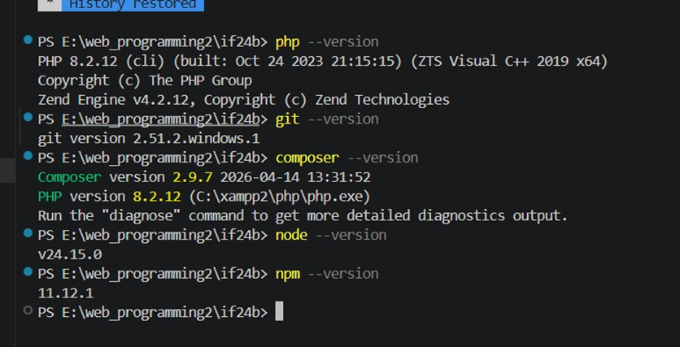
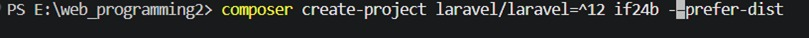
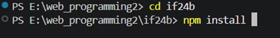
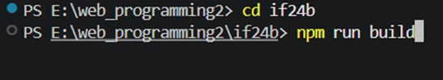
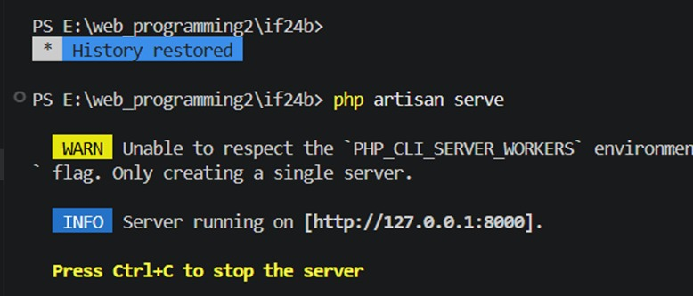
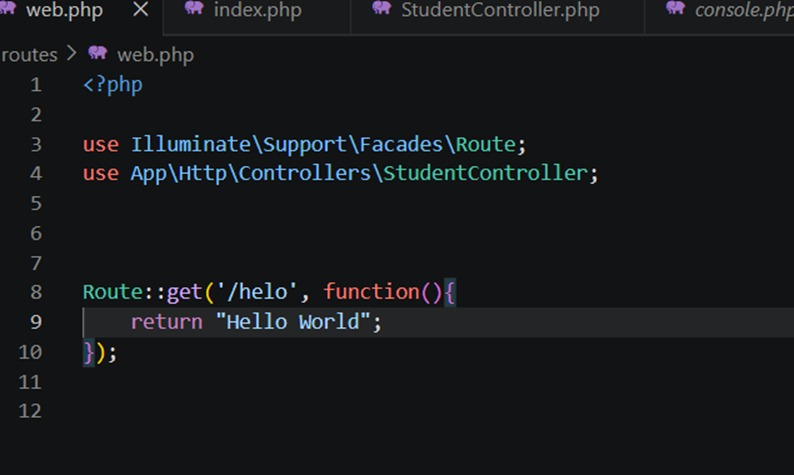
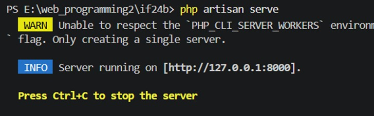
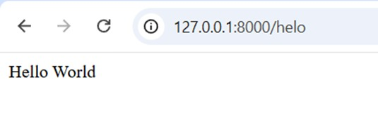

Instalasi dan Konfigurasi Framework Laravel
Published on: 12 May 2026
Penjelasan Komponen Laravel
Berdasarkan arsitektur Model-View-Controller (MVC) dan sistem inti yang diusung oleh kerangka kerja Laravel, pengamatan difokuskan langsung pada komponen-komponen utama aplikasi. Penjelasan mengenai fungsi masing-masing komponen arsitektur tersebut diuraikan sebagai berikut:
app/Models. Komponen ini memiliki fungsi krusial dalam lapisan data, yang mencakup: a) merepresentasikan struktur entitas data aplikasi, b) menangani aturan logika bisnis terkait data tersebut, serta c) mengelola interaksi langsung dengan sistem basis data menggunakan Eloquent Object-Relational Mapping (ORM) untuk memanipulasi data tanpa memerlukan penulisan kueri SQL secara manual.
resources/views. Komponen ini bertindak sebagai lapisan presentasi (presentation layer). Fungsi utama dari komponen ini meliputi: a) memisahkan logika pemrosesan aplikasi dari desain antarmuka pengguna, b) menyusun struktur visual menggunakan Blade Templating Engine, serta c) merender data yang dikirimkan oleh sistem menjadi format HTML yang siap ditampilkan pada browser.
app/Http/Controllers. Komponen ini berfungsi sebagai pusat kendali aliran program dengan rincian tugas: a) menerima dan mengevaluasi permintaan HTTP yang masuk, b) menginstruksikan komponen Models untuk melakukan operasi pengambilan atau manipulasi data, serta c) meneruskan hasil pemrosesan data tersebut ke komponen Views yang relevan untuk dirender.
routes, memegang peranan sebagai sistem pemetaan (router). Komponen ini difungsikan secara spesifik untuk: a) memetakan setiap alamat URL yang diakses menuju logika pemrosesan yang tepat, b) mengarahkan permintaan tersebut ke metode di dalam kelas Controllers, serta c) mendaftarkan lapisan penyaring HTTP (middleware).
app/Providers. Beroperasi sebagai pusat registrasi layanan pada fase awal pemuatan aplikasi (bootstrapping). Tugas spesifik: a) melakukan registrasi pengikatan dependensi, b) mendaftarkan pendengar peristiwa maupun layanan eksternal, serta c) memuat konfigurasi fundamental.
Pendahuluan
Latar Belakang
Dalam pengembangan aplikasi web modern berbasis bahasa pemrograman PHP, pemanfaatan kerangka kerja (framework) menjadi suatu kebutuhan mendesak untuk meningkatkan efisiensi waktu dan menjaga keteraturan struktur kode program. Laravel merupakan salah satu framework PHP yang banyak digunakan karena mengusung pola arsitektur Model-View-Controller (MVC), yang berfungsi secara sistematis memisahkan antara logika bisnis, pengelolaan basis data, dan antarmuka pengguna. Penggunaan kerangka kerja ini memfasilitasi proses pengembangan melalui berbagai fitur bawaan yang komprehensif, seperti sistem pemetaan URL (routing) yang dinamis, pengelolaan basis data terstruktur menggunakan Eloquent ORM, serta perenderan tampilan antarmuka melalui Blade Templating Engine. Oleh karena itu, pemahaman fundamental mengenai arsitektur dasar dan fungsionalitas struktur direktori Laravel sangat esensial agar pengembangan perangkat lunak dapat dilakukan secara terstandarisasi, aman, dan terukur (scalable).
Praktikum ini dilaksanakan sebagai bagian dari pemenuhan tugas pada mata kuliah Praktikum Pemrograman Web di Departemen Informatika, Fakultas Teknologi Informasi, Universitas Andalas. Melalui kegiatan praktikum ini, mahasiswa diharapkan dapat memahami konsep dasar serta mengidentifikasi fungsi dari setiap komponen utama penyusun framework Laravel. Selain itu, mahasiswa juga diharapkan mampu menginisialisasi proyek baru, mengonfigurasi pengaturan dasar server lokal, serta menerapkan elemen-elemen arsitektur MVC dan routing dalam pengembangan program, sehingga dapat meningkatkan kemampuan teknis dalam membangun aplikasi web yang berstandar industri dan terstruktur dengan baik.
Rumusan Masalah
Berdasarkan modul praktikum yang telah diberikan, rumusan masalah dalam praktikum ini dapat dirumuskan sebagai berikut:
- Bagaimana cara menyiapkan perangkat lunak pendukung yang diperlukan agar framework Laravel dapat terpasang dan berfungsi dengan benar.
- Bagaimana langkah-langkah dalam membuat proyek baru serta menjalankan aplikasi Laravel agar dapat diakses secara lokal melalui browser.
- Bagaimana cara melakukan konfigurasi pada sistem routing untuk menampilkan pesan atau teks sederhana pada halaman web.
Tujuan
Berdasarkan rumusan masalah yang telah dijabarkan, maka tujuan dari pelaksanaan praktikum ini adalah sebagai berikut:
- Mahasiswa mampu menyiapkan dan mengonfigurasi perangkat lunak pendukung (seperti Composer dan Node.js) yang dibutuhkan oleh framework Laravel.
- Mahasiswa mampu melakukan inisialisasi proyek baru dan mengaktifkan server lokal untuk menjalankan aplikasi Laravel.
- Mahasiswa mampu mengimplementasikan pengaturan rute sederhana untuk menampilkan teks pada halaman web sesuai dengan alamat URL yang ditentukan.
Langkah-Langkah Pengerjaan
Instalasi & Konfigurasi Laravel
- Dilakukan penginstalan terhadap XAMPP, Composer, Git, dan Node Js beserta NPM sebagai perangkat dependency yang diperlukan untuk menjalani framework Laravel. Masing-masing software diunduh pada link yang tercantum pada modul yang telah diberikan oleh dosen.
- Setelah pengunduhan selesai, dilakukan pemeriksaan versi terhadap masing-masing software untuk memeriksa compatibility dengan framework Laravel yang akan digunakan.

- Setelah pemeriksaan versi selesai, digunakan Terminal bawaan pada Visual Studio Code untuk membuat projek baru, dimana Laravel akan dijalani pada projek tersebut. Sebelum Laravel bisa dijalani, dibuat sebuah projek Laravel menggunakna Composer yang telah diunduh dengan mengetikkan perintah “composer create-project laravel/laravel=^12 if24b --prefer-dist” pada terminal.

- Langkah berikutnya adalah memindahkan direktori kerja ke dalam folder proyek yang telah diinisialisasi menggunakan perintah cd if24b. Setelah berada di dalam direktori tersebut, instalasi paket Node.js beserta kompilasi aset dijalankan secara berurutan dengan mengetikkan perintah “npm install && npm run build” pada terminal.


- Untuk mendukung pemantauan perubahan kode secara langsung (real-time), proses kompilasi aset secara berkelanjutan diaktifkan dengan menjalankan perintah npm run dev pada terminal.
- Setelah itu, diaktifkannya server development lokal agar Laravel dapat diakses melalui browser dengan mengetikkan perintah “php artisan serve” pada terminal.

Pengantar Laravel
- Langkah pertama dalam menampilkan teks "Hello World" pada framework Laravel adalah dengan mengakses konfigurasi routing pada folder routes/web.php. Selanjutnya, pendefinisian rute baru ditambahkan menggunakan fungsi Route::get(), di mana parameter pertama diisi dengan '/helo' sebagai target URL, dan parameter kedua menggunakan anonymous function (fungsi anonim) yang bertugas mengembalikan string "Hello World".

- Setelah tahapan konfigurasi rute selesai, langkah selanjutnya adalah mengakses URL yang dihasilkan oleh eksekusi perintah php artisan serve pada terminal. URL tersebut kemudian dimasukkan ke dalam browser dengan menambahkan path /helo pada bagian akhir. Hasilnya, teks "Hello World" akan berhasil ditampilkan pada halaman browser.


Kesimpulan
Berdasarkan praktikum yang telah dilakukan, dapat disimpulkan bahwa tahapan awal penggunaan framework Laravel telah berhasil dilaksanakan. Persiapan perangkat lunak pendukung telah dilakukan untuk memastikan lingkungan pengembangan siap digunakan. Prosedur pembuatan proyek baru telah berhasil diselesaikan sehingga struktur dasar aplikasi dapat terbentuk dengan benar. Selain itu, pengujian pada sistem routing telah berhasil dilakukan untuk menampilkan teks "Hello World" pada browser melalui alamat rute yang telah dikonfigurasi. Keberhasilan ini menunjukkan bahwa dasar-dasar penggunaan Laravel telah dipahami dan sistem telah siap untuk dikembangkan ke tahap selanjutnya.
Repository Praktikum
Kode sumber dan file konfigurasi dari praktikum ini dapat diakses pada repositori GitHub berikut:
https://github.com/DaffaAiraAdrn/PemogramanWeb_2411531006